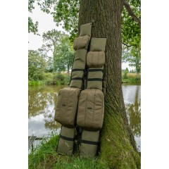

Rod Holdalls
We stock Rod Holdalls to protect your expensive rods and they also provide a conveniant way to carry your kit
We stock Rod Holdalls to protect your expensive rods and they also provide a conveniant way to carry your kit
Carryalls are used to store fishing tackle such as; bait tubs,terminal tackle, seat attatchments etc
Anglers may use several nets on each session such as landing nets and keep nets. A Net bag will help keep these nets safe and secure
There are many diffrents baits to choose from most common are; maggots, casters, warms, pellets, sweetcorn and tinned meat. Bait bags provide a convenient way to store and carry them